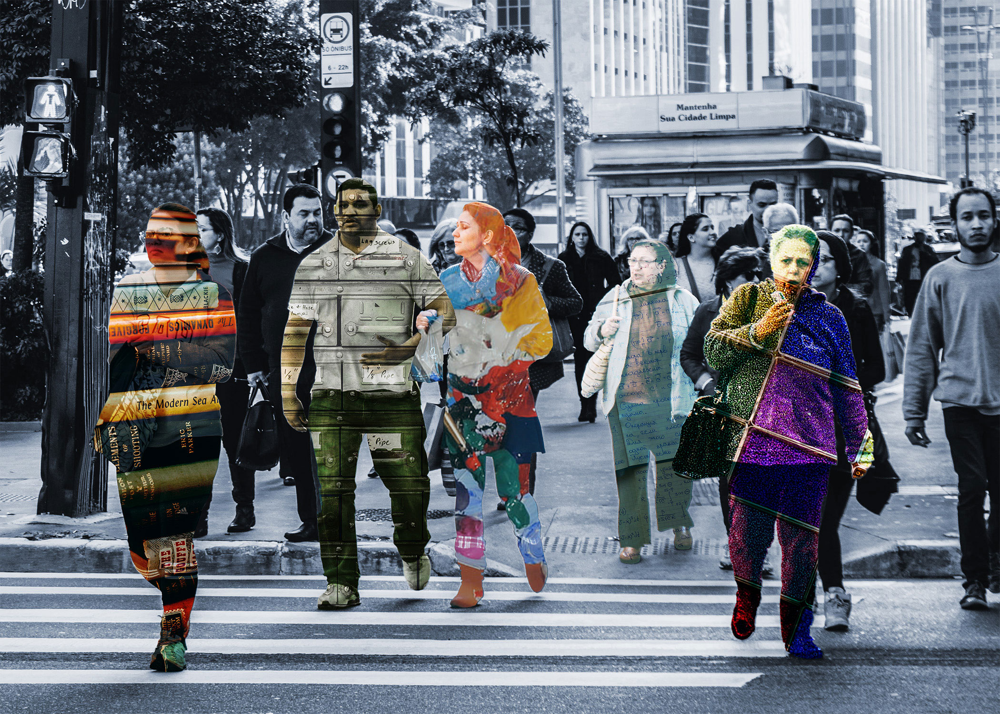

Social Campaign 2
For this project I want to explore the concept of neurodivergence and had the idea to use images of groups of people with people highlighted in various ways with secondary images that highlight various people and represent what is going in their minds and how their methods of thinking and processing are different but valuable in their own ways. I used the search tool at creativecommons.org to source images from different sites/search engines that have the CC license.
To accomplish this I I masked out five of the prominent people in the crowd and used the secondary images to completely cover their bodies while using two different blending modes on each, experimenting to find ones that allowed both the person to be visible and the image inside them to be recognizable and impactful (Overlay, Soft Light, Lighter Color, Color Dodge, Lighten, Screen, Hue, Hard Light, Multiply).